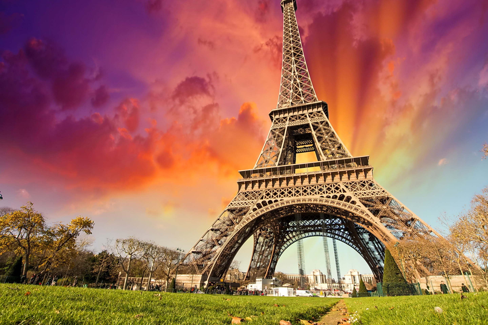

Top Attractions

Tokyo Tower
Tokyo Tower offers stunning views of the city skyline.
Visitor Info: Open daily from 9 AM - 11 PM. Ticket: ¥900.

Shibuya Crossing
The busiest pedestrian crossing in the world.
Visitor Info: Best to visit in the evening for a vibrant experience.